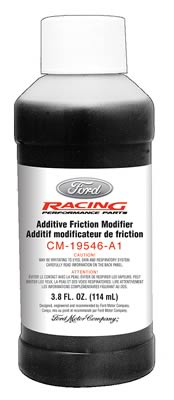
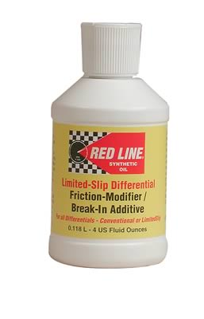

-
I have been unable to find the Pennzoil #4096 LSD Oil (PPC # 020796), but did have some Shell 80W-90 that meets the GL-5 rating. My question is, which friction modifer do you guys use or prefer to use when changing your CLSD fluid?
I have used the Ford product at work in all of our Crown Vics and it seems to work well with them.

But I also use the Redline products in my T-5 trans without any problems.

Or if there are any others, let me know (these two are in stock at Summit Racing).
-
Crown Vics with LSDs? whoa. News to me.
Sorry I can't offer any insight to your question.My beloved Z:1987 2+2 NA2T w/30a swap.
My black sheep: 88ss parts car (pretty much stripped and gone)
207k miles and counting. Turbo'd since 155k. -
Az4u2c wrote: Crown Vics with LSDs? -
I thought the oils and additives had to meet GL-4 standards, not GL-5.1984 300ZXT
1986 300ZX 2x2 NA2T
2000 Porsche Boxster
2007 Toyota Yaris -
bemis wrote: I thought the oils and additives had to meet GL-4 standards, not GL-5. -
I used the Redline stuff…seems to be working.Elitist Prick Black Z owner.
1986 300zx Turbo
2011 Ford F150 Super Crew 4x2 EcoBOOST
1985 Toyota 4Runner, locked, lifted, geared, uglied.

-
I use the additive I get at a driveline shop. I believe it is the same product made for Ford LSD's but in a generic version so it's cheaper.
GL-5 is fine for your diff, but just to warn people DO NOT USE GL-5 in your nissan manual transmission. -
So what does the GL-5 do to the tranny? Are the redline fluids GL-5? cause I have been running that for a while now :shock:Jason84NA2T wrote: I use the additive I get at a driveline shop. I believe it is the same product made for Ford LSD's but in a generic version so it's cheaper.
GL-5 is fine for your diff, but just to warn people DO NOT USE GL-5 in your nissan manual transmission.85 Z31 6.0 LSX turbo 766whp/792wtq
04 GTO, LS6, big cam, porting, N20… underway for summertime daily driver. -
[quote]SATAN wrote:Originally posted by Jason84NA2TIt reportedly has additives that erode some of the elements used in older nissan transmission blocker rings, eventually causing synchronizer failure. I've heard this from numerous sources so far, and combined with the number of Nissan manual transmissions that have gear grinds with very few miles on them I figure it might be good to get the word out. I don't know if it's applicable to the T5 or not, but I would assume not.Originally posted by Jason84NA2T
I've been told that Redline and all other synthetic oils are GL-5 certified without the purposed harmful shock additives, meaning they are safe for transmissions you should otherwise not use GL-5 in. -
Redline in the trans and diff here.
I like the results. I noticed a bit nicer shift when I started using it. Not much of a way to qualify the diff oil other than longevity.Just stand back and throw money.
Performance costs money.
Reliable performance costs more. -
Everyone here needs to go for a trip around the block in my car so I can expose you to the diff oil additives test bed. :lol:
Jason knows.
I've tried all of them. The winner is…
with conventional 80w-90.
The Kaaz and cusco, etc oils are even better, but nobody here would buy them.sigpic -
Jukka Kivinen - Europe / Finland - '88 Turbo 2+2 Targa
Datsun Nissan Sports Cars of Finland
http://www.z31turbo.com / http://www.z31na.com -
those using redline in the diff…are you using MT90 or something different?2008 BMW E92 335i 6MT -
Wow dude…simply brilliant, I just put some of this Kedall additive in with some new 80w-90 and my chatter is gone…then went and beat the shit out of it…amazingly smooth. Thanks so much for the tip, it gets a thumbs up from me.Butter wrote: Everyone here needs to go for a trip around the block in my car so I can expose you to the diff oil additives test bed. :lol:
Jason knows.
I've tried all of them. The winner is…
with conventional 80w-90.
The Kaaz and cusco, etc oils are even better, but nobody here would buy them.
1987 Nissan 300ZX Turbo (Budget Supercar)
1987 Nissan 200SX SE (Old School FR)
1994 Nissan Sentra SE-R (Balls To The Wall Track Car)
2000 Nissan Maxima SE (Daily Driver)
2006 Scion tC (Wife Whip)
In an ideal world I would have all ten fingers on my left hand, so my right hand could just be a fist for punching. -
I know, every body here uses it now. Like $7 per diff fluid change vs $35 with the aftermarket LSD oils. Stuff smells like shit though.sigpic

Copyright © 2006–. All rights reserved. Privacy Policy